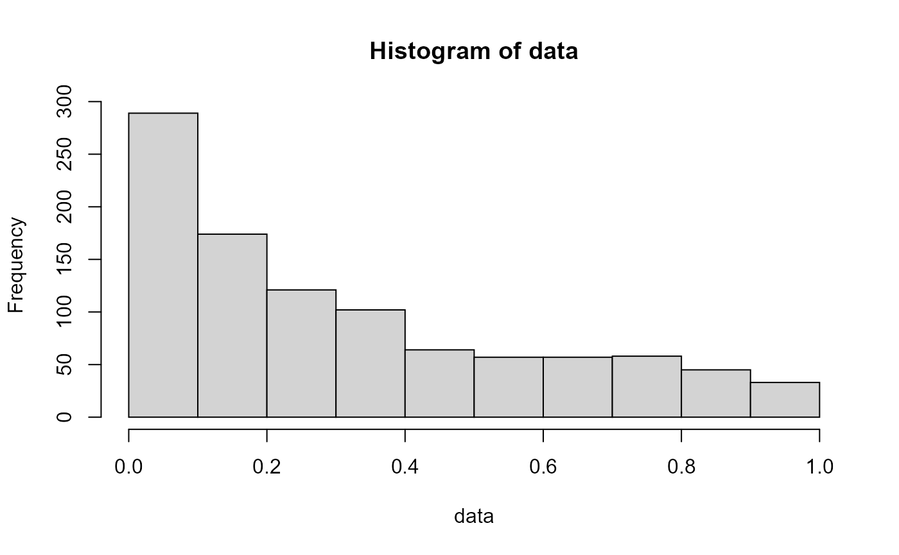
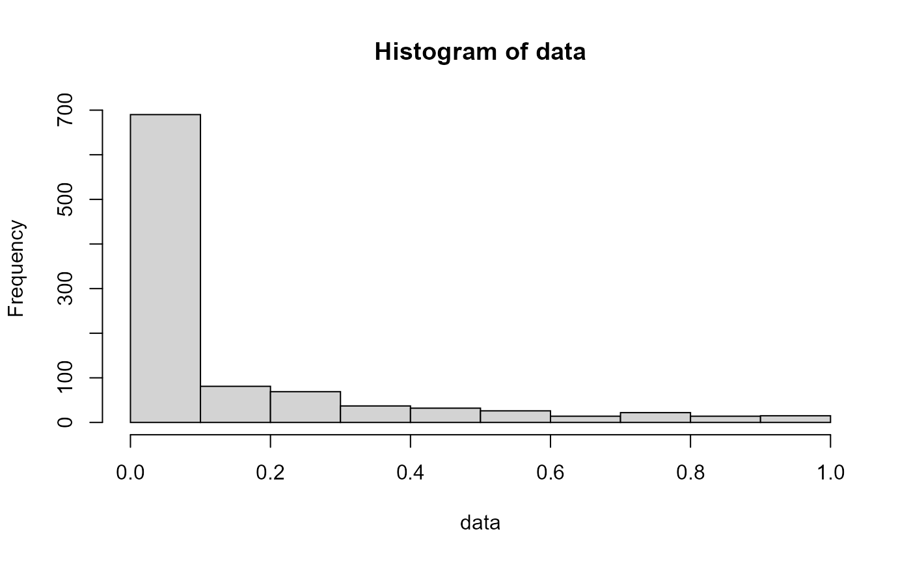

Use the Standardized Bradford Distribution in R with bradfordr
Victor Dogo
Last updated in 2021-10-02
Source:vignettes/rng-bradford-dist.Rmd
rng-bradford-dist.RmdThe aim of bradfordr, initially, was to simply generate random numbers from the Standardized Bradford Distribution. It uses the Inverse Sampling Method to generate numbers from it:
The Inverse Transform Sampling Method
The Inverse Transform Sampling Method is widely used to generate pseudo-random variables in cases where a specific distribution isn’t available. It can be applied both computationally and analytically.
In short, this method consists in the following steps:
- A number \(u\) between 0 and 1 is sampled from the \(Uniform(0,1)\) distribution and interpreted as a probability;
- We take the distribution’s CDF and equalize it to \(u\). In our case, we have:
\[ u = F(x;c) = \frac{log(1 + cx)}{log(1+c)} \]
- The expression obtained is inverted; in other words, we manipulate the equation so that \(x\) is isolated. In our case, we have:
\[ x = F^{-1}(u;c) = \frac{(1+c)^u - 1}{c} \]
- That’s it! The \(x\) value obtained is a pseudo-random number generated from the distribution of interest.
A more in depth and technical definition can be seen in Wikipedia.
Generating Numbers
It’s as easy as 1-2-3: just call the rbradford function with sample size n and parameter c (defaults to c=5):
data <- rbradford(1000, c=10)
head(data)
#> [1] 0.04015427 0.02035772 0.33808969 0.05461808 0.23323999 0.79492371We can easily plot this data to understand how it behaves:
hist(data)
With greater c values, comes a longer tail:

These differences can be seen better with the help of the other functions. It’s also possible to verify that graphically:
Verify distribution behavior graphically
It’s useful, for us, to visualize how the distribution’s curve changes regarding the possible values of the c parameter. This can be done with pbradford (which defines the Cumulative Distribution Function), dbradford (which defines the Probability Density Function) and qbradford (which defines the Quantile Function).
In this vignette, I’ll give an example with pbradford, which is the most useful function of the three mentioned above.
# Behavior of cdf for c = 1, 10 and 100
x <- seq(0,1,0.01)
# Defining different values for the cdf based on c parameter
y_c1 <- pbradford(x,c=1)
y_c10 <- pbradford(x,c=10)
y_c100 <- pbradford(x,c=100)
# Plotting
plot(x,y_c1,type="l",col="red",main="CDF of Bradford Dist.",ylab="Fx")
lines(x,y_c10,col="blue")
lines(x,y_c100,col="green")
legend("bottomright",legend=c("c=1","c=10","c=100"),
lty = c(1,1,1),
col=c("red","blue","green"))
Here, we can see that, as c gets bigger, so does the weight to the right of the cdf. In other words, this means that small values of x applied to \(F(x;c) = P(X \leq x)\) tend to give us bigger probabilities as c grows.
This is true to all other functions as well: the size of the parameter c influences how much weight smaller values of \(x\) have.